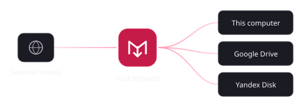

Save media.
Keep it in order.
Save selected images, GIFs and videos. Give each file a useful name and folder, then watch the download finish.
Latest release: v3.0.7 ↗The Store listing updates separately.

A saved file, named by your rules
- Downloads
- Content
- x
- username
- Image
2026-11-04_14-35-12_x_username.jpg
Choose the folder and filename fields in MediaLatch.
From the page to your folders.
- Save an item or gallery
- Use the page controls or right-click the media. Supported gallery controls can save several items from one post. Sources and formats depend on the site and your access.
- Choose filing rules
- Build folder paths from the site, author and media type. Pick filename fields and keep separate profiles for your computer and each cloud.
- Track each download
- The toolbar popup shows the queue. Open the manager for saved results, cancellation, retries and error details. Speed and remaining time appear when available.
- Copy a post link
- Choose a preview service and copy its link. The service and destination app handle the preview request.
See it in the toolbar.
Small controls. Clear state.Downloads
● 4 saved · 6.2 MBDownloads / SavedImages / x
Image · 2048 × 1536 · Original
A small preview of the toolbar popup. The extension keeps this flow local-first.
Your computer, or your cloud
Version 3.0.7 saves locally and supports optional Google Drive and Yandex Disk connections. Pick a destination for new saves; queued work keeps its chosen destination.

Connect with OAuth or a supported token. Google Drive uses drive.file; Yandex uses its app folder. Local saving works without an account.
Uploads go from your browser to the provider. MediaLatch does not run a media server, ads or analytics.
If the provider is unavailable, MediaLatch reports the error instead of sending the file to your computer.
Connection guidePrivacy details
In development
More destinations.
A place to prepare posts.
MEGA uploads and Telegram channel posting are in development. The Telegram editor stores local drafts and previews captions with media.
MTProto sign-in and Telegram scheduling are planned. Release notes will say when they are available.
Read release notesBugs and questions
Include your extension version, browser, source page and what happened in GitHub Issues. Keep passwords, access tokens and private media out of public reports.
For private security or privacy questions, email always1337@vk.com. MediaLatch is maintained by fs0x1337 at NoizWorks. Support development on Boosty or DonationAlerts.